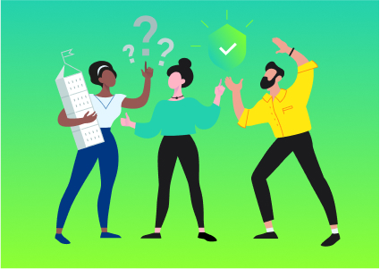
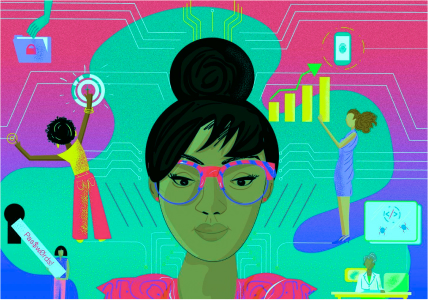
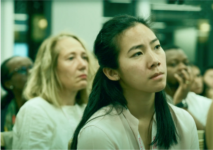
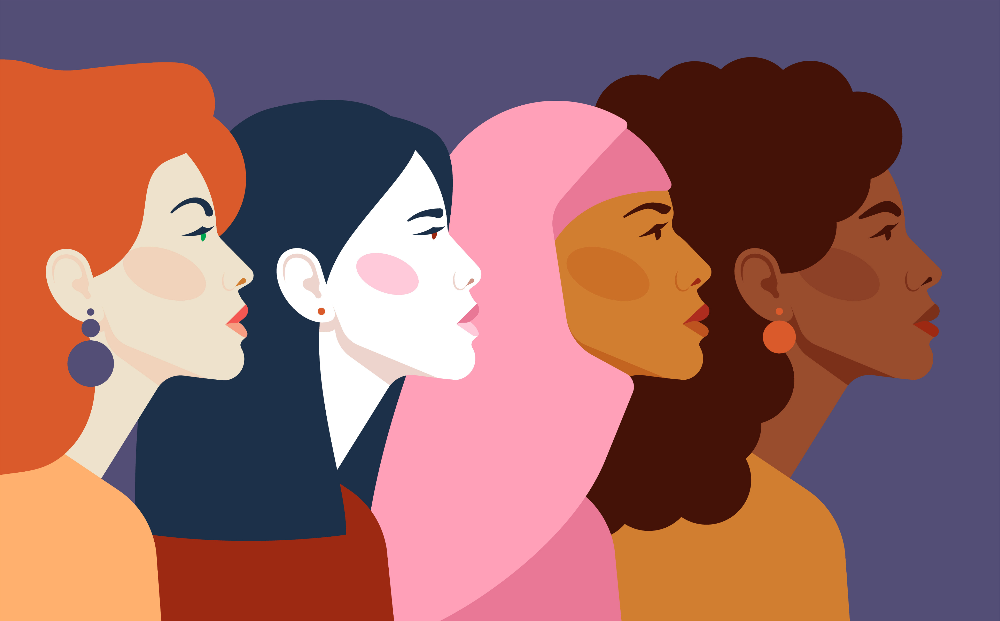

Facts
Check out all the numbers, data and facts in theKaspersky Women in tech report for 2020-2021
As we enter the third decade of the 21st century, where do women stand in technology and IT? Kaspersky decided to build on the research it began in 2018, and in 2020 the company spoke to women in Europe, North America, Latin America and the APAC region to find out how they now feel and what has changed over the past two years. There̕s plenty of good news: 57% of the women surveyed agree that gender equality has improved in their organization. Even COVID-19 has brought benefits, with working from home helping women feel more autonomous in their roles — boosting their confidence as well as their career prospects. But there̕s still a lot to be done in the field to truly empower women.
56 %
of women working in IT globally
agree that there are now more women in IT and tech roles in their organization than two years ago.
Only 10 %
of women
surveyed work in a majority female team, with 48% in a male-dominated environment and 39% in an evenly split workplace.
44 %
of women in tech
agree that ‘men progress faster than women in my organization.’
The impact of the COVID-19 pandemic
The ‘new normal’ of women in tech: a work-life [im]balance
48
%
of women
surveyed say they have found juggling work and family life stressful since March 2020.
6
in
10
women
have taken on the responsibility for most of the household work and home schooling since the beginning of the COVID-19 outbreak.
Regions
News hub
-

The evolution of women in IT
Watch Kaspersky and Ada's List event where we talk about how women perceive the industry and the opportunities available to them, as well as challenges due to the ongoing global pandemic. -

Women and diversity
Our articles about Women in tech and tech and women. -

It’s women’s business
We help women to build a career in IT. -
Where areall the womenin IT?
The research paints a detailed picture of the gender makeup of IT teams across Europe in 2018.

Community
Women in Tech Podcast
Our partners
Support our initiative and become a partner of the Empower Women project — we look forward to cooperating with you!